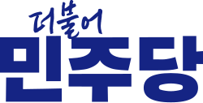
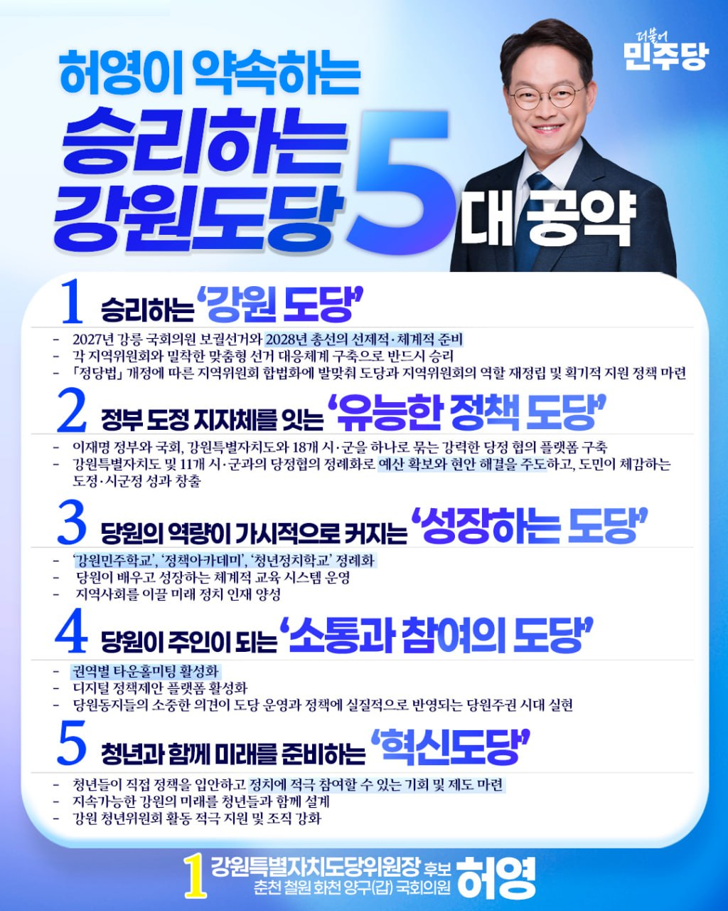

1
승리하는 '강원 도당'
2027년 강릉 국회의원 보궐선거와 2028년 총선의 선제적·체계적 준비
각 지역위원회와 밀착한 맞춤형 선거 대응체계 구축으로 반드시 승리
「정당법」 개정에 따른 지역위원회 합법화에 발맞춰 도당과 지역위원회의 역할 재정립 및 획기적 지원 정책 마련

강원특별자치도당소중한 한 표가 민주당의 미래와 강원의 승리를 만듭니다.
푹푹 찌는 폭염 속에서도 먼 길 마다하지 않고 함께해 주신 당원 한 분 한 분께 진심으로 감사드립니다.
2026. 8. 4. 동해·태백·삼척·정선 권역 당원 간담회

말뿐인 포부가 아니라, 성과를 만들어내는 유능한 리더십으로 약속드립니다.
2027년 강릉 국회의원 보궐선거와 2028년 총선의 선제적·체계적 준비
각 지역위원회와 밀착한 맞춤형 선거 대응체계 구축으로 반드시 승리
「정당법」 개정에 따른 지역위원회 합법화에 발맞춰 도당과 지역위원회의 역할 재정립 및 획기적 지원 정책 마련
이재명 정부와 국회, 강원특별자치도와 18개 시·군을 하나로 묶는 강력한 당정 협의 플랫폼 구축
강원특별자치도 및 11개 시·군과의 당정협의 정례화로 예산 확보와 현안 해결을 주도하고, 도민이 체감하는 도정·시군정 성과 창출
'강원민주학교' · '정책아카데미' · '청년정치학교' 정례화
당원이 배우고 성장하는 체계적 교육 시스템 운영
지역사회를 이끌 미래 정치 인재 양성
권역별 타운홀미팅 활성화
디지털 정책제안 플랫폼 활성화
당원동지들의 소중한 의견이 도당 운영과 정책에 실질적으로 반영되는 당원주권 시대 실현
청년들이 직접 정책을 입안하고 정치에 적극 참여할 수 있는 기회 및 제도 마련
지속가능한 강원의 미래를 청년들과 함께 설계
강원 청년위원회 활동 적극 지원 및 조직 강화
당원 동지 여러분께서 전해주신 의견과 제안,
하나도 가볍게 듣지 않겠습니다.
앞으로의 2년은 강원의 미래를 결정할 '골든타임'입니다.
도당위원장은 당을 관리하는 자리가 아니라 당의 승리를 책임지는 자리입니다. 성과로 신뢰를 쌓고 실력으로 강원을 발전시키겠습니다.
— 강원도당위원장 후보 허영, 출마 선언 중
안녕하십니까.
기호 1번 강원도당위원장 후보, 국회의원 허영입니다.
강원 지역 권리당원 투표가 8월 7일(금)부터 시작됩니다. 소중한 한 표가 민주당의 미래와 강원의 승리를 만드는 힘이 됩니다.
저 허영은 강원도당을 이재명 정부와 우상호 도정을 잇는 정책 플랫폼으로 만들고, 지역위원회와 청년조직을 튼튼히 세워 2027년 강릉 보궐선거 승리와 2028년 총선 승리의 기반을 반드시 만들겠습니다.
꼭! 투표에 참여하셔서 강원도당위원장 후보 저 허영을 뽑아 주십시오.
건강 잘 살피시고, 늘 평안하시길 기원합니다.